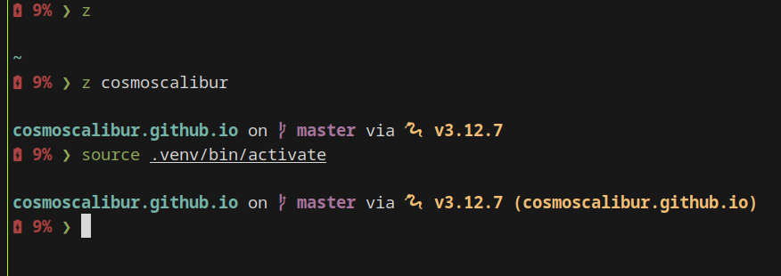

Entradas etiquetadas manjaro
Install Docker on Manjaro
- 2025-04-23
Now that I use Manjaro, it’s worth reviewing the steps to install Docker on Manjaro.
Instalar Docker en Manjaro
- 2025-04-23
En el pasado publiqué un artículo de como instalar y usar Docker en Ubuntu con Snap y ahora que uso Manjaro vale la pena revisar los pasos para instalar Docker en Manjaro.
Mounting a disk in Linux and dirty volume error
- 2025-01-10
I hadn’t used my external hard drive for some time, which was formatted as NTFS, and when I went to use it (mount it) after updating the operating system, an error about a dirty volume appeared. If you’ve encountered this too, here’s how to solve it.
Montar disco en Linux y error de volumen sucio
- 2025-01-10
Llevaba algún tiempo sin usar mi disco externo, en formato NTFS, y cuando fui a usarlo (montarlo) después de actualizar el sistema operativo, me ha salido el error de volumen sucio. Si te ha pasado, a continuación te indico como solucionarlo.
Wayland and Hybrid Graphics Issues in Linux
- 2024-12-18
Hybrid graphics cards are a strategy used by modern computers to incorporate two graphics cards: one integrated and one dedicated, with different capabilities and energy consumption. The idea is not to use the dedicated card unless necessary for 3D rendering. However, this is not a resolved issue in Linux and affects native applications running on Wayland, which is the new and modern protocol for server-side graphics communication used by window compositors in Linux (replacing X11), that utilize Vulkan.
Problema de Wayland y gráficos híbridos en Linux
- 2024-12-18
Los gráficos híbridos son una estrategia de los equipos modernos a incorporar dos tarjetas gráficas, una integrada y una dedicada, con capacidades y consumo de energía diferentes. La idea es no usar la dedicada, salvo que sea requerido para el renderizado 3D. Sin embargo, esto no es un problema resuelto en Linux y afecta a las aplicaciones nativas en Wayland, el cual es el nuevo y moderno protocolo para comunicación de servidor gráfico usado por los compositores de ventanas en Linux (en reemplazo de X11), que hagan uso de Vulkan.
Configuring Starship on Manjaro and Zsh
- 2024-12-15
Recently, I’ve been switching multiple tools in my daily work, including changes in handling the Linux terminal. One of these changes is the shell prompt (the terminal indicator), and I’m using starship. However, there are some undocumented details on how to enable it on Manjaro with zsh, which I’ll explain here.
Configurar Starship en Manjaro y Zsh
- 2024-12-15
Hace poco vengo cambiando múltiples herramientas en mi día a día, y en el manejo de la terminal Linux hay varios de esos cambios. Uno de esos es el shell prompt (que podría traducirse tal vez como “indicador de terminal”), y estoy usando starship. Sin embargo, hay detalles no documentados sobre como habilitarlo en Manjaro con zsh, que aquí les cuento.
Connecting to a Cloud SQL instance on Manjaro
- 2024-12-10
Since I’m currently in a full system installation process following the transition from (X/K)Ubuntu to Manjaro, I’ll explain how to connect to a Cloud SQL instance on Manjaro.
Conecta con una instancia de Cloud SQL en Manjaro
- 2024-12-10
Aprovechando que estoy en reinstalación por la transición de (X/K)ubuntu a Manjaro, les contaré sobre como conectar a una instancia de Cloud SQL en Manjaro.
Wi-Fi issues in Linux
- 2024-12-07
If Wi-Fi starts to disconnect randomly and upon reviewing the list of networks, these have disappeared, there are some points to consider evaluating.
Problemas de conexión wifi en Linux
- 2024-12-07
Si el WiFi de manera aleatoria comienza a desconectarse, y al revisar el listado de redes estas han desaparecido, algunos detalles por evaluar son:
¿Qué hacer después de instalar Manjaro KDE?
- 2024-12-05
Hace poco decidí pasarme a Manjaro KDE (24.1) y estoy muy contento del cambio. Así que con motivo a esto, les cuento sobre las cosas por hacer después de completar la instalación.
What to do after installing Manjaro KDE 24?
- 2024-12-05
I recently decided to switch to Manjaro KDE (24.1) and I’m very happy with the change. So, taking this opportunity, I’ll share some things to do after completing the installation.
“Distrohopping”: Switching Linux Distributions Without Losing Your Mind
- 2024-12-03
I’ve recently switched Linux distributions twice, which got me thinking about the associated effort and how it could be reduced. It also reminded me of the concept of “distrohopping” and the discussions about this practice, where many claim that it’s a waste of time and offers little value. However, I disagree and want to share the value I see in it and how to make it easier.
Distrohopping: Cambiar de distribución Linux y no morir en el intento
- 2024-12-03
Vengo de dos cambios de distribución Linux recientes, y eso me hizo pensar un poco en el esfuerzo asociado y en como ese esfuerzo se puede reducir. Igualmente, recordé el concepto asociado de “distrohopping” y las discusiones alrededor de esta práctica, en la cual muchos terminan afirmando que realmente es perder el tiempo y que aporta poco valor, pero yo no lo veo así y quiero compartirles el valor que le veo y el cómo facilitarlo.